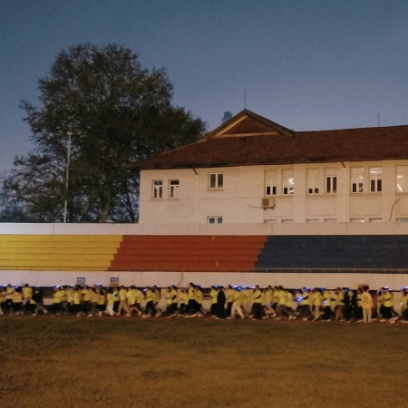
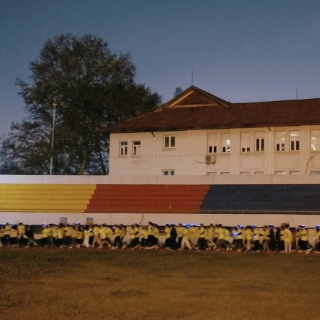
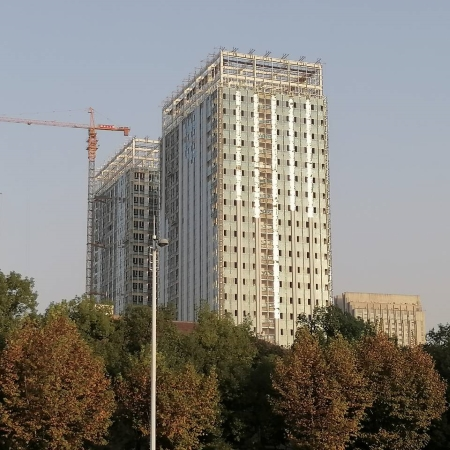

首义校区
荧光夜跑



这是大一下学期在首义校区大运场举行的一次荧光夜跑活动。
我记得那次进门还要排队检票，队快排到南门了，超级长，我那时候差一点就进不去了，因为人太多，而参加人数是有限的。
进去之后会领得荧光棒，然后后面就会绕操场跑两圈，有一些人会穿着荧光服，领着我们跑。
我所拍的就是那帮带头跑的人。

这是大一上学期在南运场拍的，拍的是外面还在施工的的建筑。
那时候可能是我专门去南运场拍的，也可能是跟闺蜜打电话的时候散步路上拍的。
那时候就是觉得建筑的颜色和天空的颜色很配才拍的吧。
后来还把这张照片洗出来，寄给了闺蜜。